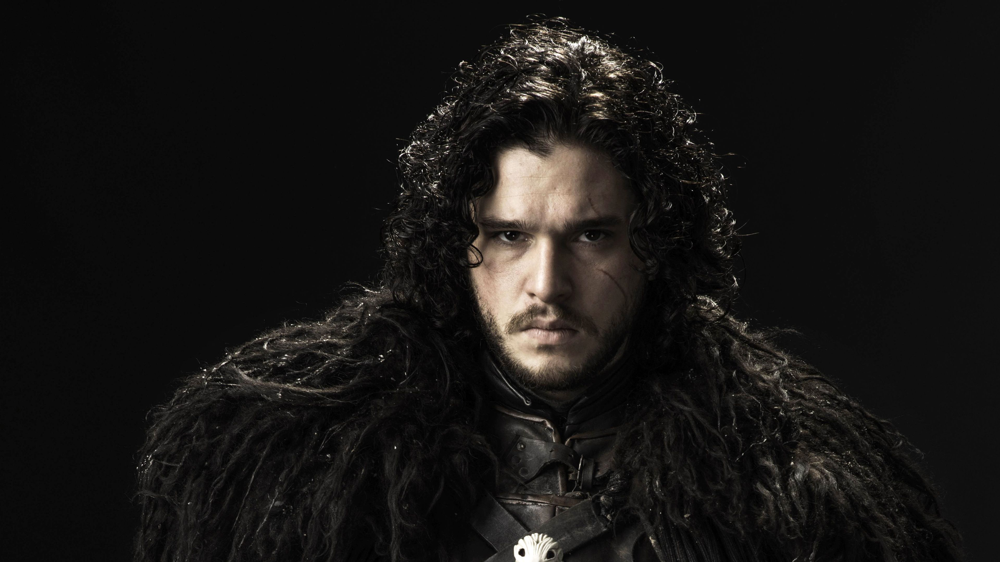
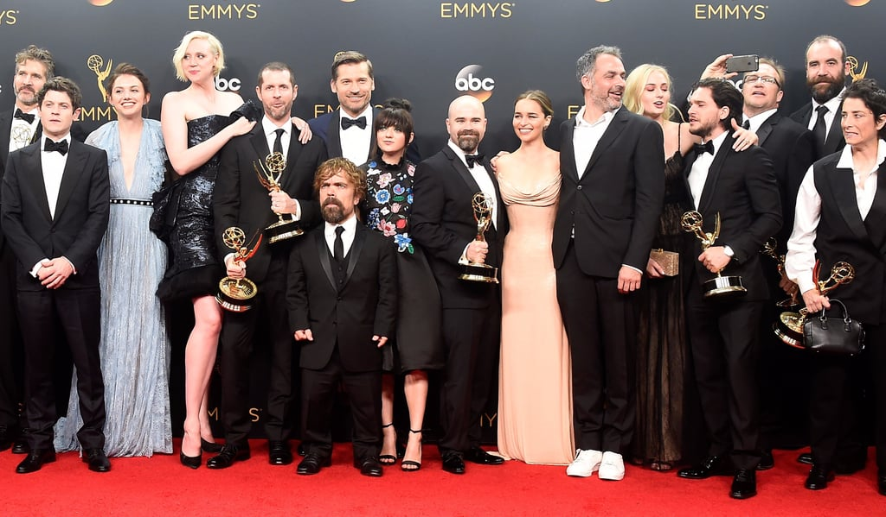

Kit Harington Thinks 'Game Of Thrones' Season 8 Will "Change TV"

Kit Harington's reaction to the big Game of Thrones
season eight finale shows that has finally fully mind-melded
with Jon Snow. He's "not happy, but very satisfied" with how
it all ends for Jon and the gang, which is an extremely grumpy
northerner way to put it. He reckons the finale will
knock some heads back, too.
‘It was HARD’ Star teases major twist in final season

GAME OF THRONES season eight is fast approaching
and the cast have long since wrapped their final scenes,
but with fans desperate for any morsel of new information
for the final episodes one star recently shared their own
experience on the set, claiming it was the “hardest
season they’d done”.